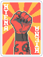
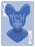
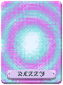
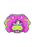

Commissions
Want a Balatro mod featuring your OCs, fursonas, or self? You've come to the right people! Gwyn (hellgnoll) and June (junipertheory) are the team behind Original Cardactors, the grab-bag mod of little friends for everyone! Our commissions are OPEN, and we are ready to make you into a joker! (Or whatever else!)
When you commission us, we will provide you a stand-alone mod that contains just your commissioned item! It will also be added to the Original Cardactors mod unless requested (see FAQ), so everyone can download and enjoy the ever expanding collection of characters!
If you're interested in commissioning us, reach out to either of us on DMs or email!
Contact
Pricing
Texture Replacement
US$30
Simple Addition
US$60
Complex Addition
 US$90
A Whole Bespoke Mod
US$200+
Frequently Asked Questions
Is this a paid mod? NO. Anyone can download this mod and enjoy it! Patrons pay us for our labour adding their requests to the mod as outlined in our pricing above, like ye olde furry commissions. While we can make you a private mod for personal use if requested (see below), we do not (and will not ever) condone paid mods.
What if I don’t want to be part of the big mod and just want to commission my own thing? If you wish to forego your characters being added, we are happy to make a private mod for your personal use. Please contact us with any additional questions. Standard pricing and conditions will apply.
Is this mod compatible with other mods (say, Pokermon or Cryptid)? Hopefully! We all use a ton of random mods and try to keep things compatible. If you’d like compatibility with a specific mod, let us know and we’ll try to make it work. Keep in mind that long-term compatibility is not something we can guarantee.
The stand-alone mod of my character stopped working after SMOD updated... can you fix it? Unfortunately, we can't continuously re-release the individual mods to all patrons whenever something breaks. However, we will keep the Original Cardactors collection up-to-date and working (at least as long as our commissions are open) and your characters will be kept functional and updated there. ❤
I’m broke, but I still think this mod is super cool! That’s not a question, but feel free to suggest things or such! This mod is also a place for us to add random ideas and random stuff our friends suggest. If you have an idea, we’ll maybe try it out!
I have multiple Jokers I want to commission. How are commissions itemized? What if it’s four versions of the same character? We’ll help you figure it out and make something work! Reach out and ask us for a quote and we can let you know what sort of discount we can offer.